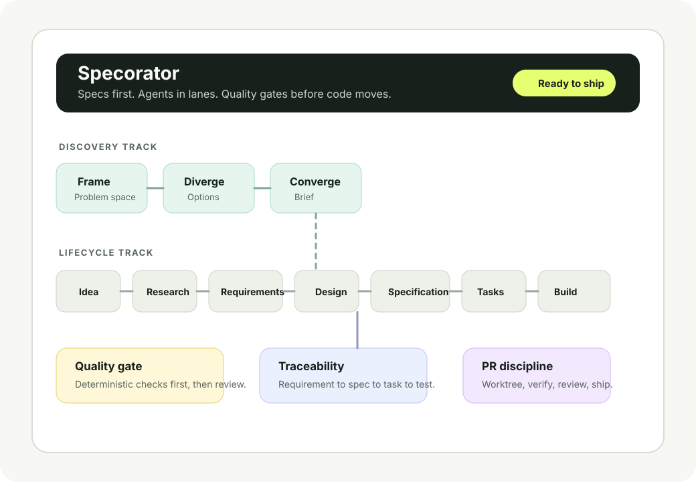

The problem
AI coding tools often start in the wrong place.
Most assistants jump straight to implementation. That can produce code quickly, but it also bakes in unclear requirements, missing decisions, and late-stage rework.
Spec-driven software with AI agents
A ready-to-use workflow template that keeps humans in charge of what to build while AI agents help with the heavy lifting of how.

The problem
Most assistants jump straight to implementation. That can produce code quickly, but it also bakes in unclear requirements, missing decisions, and late-stage rework.
The product
Specorator turns software work into staged artifacts, specialist roles, quality gates, and traceable decisions so agents can move fast without guessing what humans meant.
Use it as a template, adapt the steering docs, and let every feature move through the same visible path.
Idea, research, requirements, design, specification, tasks, implementation, testing, review, release, and retrospective.
Frame, diverge, converge, prototype, validate, and hand off before a feature brief exists.
PM, design, architecture, development, QA, review, release, and operations roles stay in their lane.
Each stage has acceptance criteria so defects are caught where they are cheapest to fix.
Requirements, specs, tasks, code, tests, and findings use stable IDs and link back to source intent.
Topic branches live in isolated worktrees, pass verify, and move through PR review before merge.
Review, docs, plan reconciliation, dependency triage, and Actions updates can be automated over time.
Claude Code gets first-class commands, while Codex, Cursor, Aider, Copilot, and other tools can follow AGENTS.md.
The repository gives each role an entry point without turning the process into a separate product to maintain.
Run discovery, shape requirements, review designs, and keep intent explicit.
Implement from clear tasks and specs instead of reverse-engineering stakeholder intent.
Coordinate humans and agents across a release cycle with visible gates and artifacts.
Use the same lifecycle while AI agents fill specialist roles one stage at a time.
Discovery creates the brief. The lifecycle turns it into tested, reviewed, releasable work.
Fork the template, fill in the steering context, and start a feature through natural language or slash commands.
Clone or create a repo from github.com/Luis85/agentic-workflow.
Adapt the constitution and steering docs so agents know your product, stack, and quality bar.
Start from a feature idea, a design sprint, or the orchestrated end-to-end workflow.
Keep every concern on its own branch, run npm run verify, and ship through review.